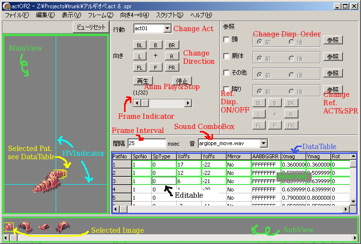

日本語はこちら
Preface
actOR is ACT file editor. However, this doesn't provide only one function.
This program can extract BMP&TGA file from SPR file. And, can build SPR file from BMP&TGA file. (I want to pay attention to the TGA file.)
From this version, this program can handle PAL file. This program can read/write PAL file of RO, ACT file of Photoshop, ACO file of Photoshop(only RGB color space), GPL file of GIMP, and PAL of EDGE(EDGE is japanese free dot image editor). PAL file that was read attach to SPR file. If writes it as it is, you can get SPR file that was changed the color easily. Are other BMP<->SPR converter programs necessary still?
In addition, this program can open ACT and/or SPR files from some GRF files directly, and make a GPF file directly. Moreover, a part of files in GRF are shown in English(based on iRO).
If you want to show your great works as animated gif, this program helps you. This program can write as anmated gif including your logo.
Preparation
- Extract the target ACT&SPR files from GRF/GPF files. (This program can not create an ACT file from scratch.)
Even if you want to change the color or change the image only, you will extract ACT file too.
- If you want to create/modify body of human or accessories, extract the head (of human) ACT&SPR files for reference.
- If you want to change images, you must image&create original images.
Please make the image format BMP's 256 color palette form or TGA's non-compression 32bit full-color form.
Main window
Figure below is a screen shot of the main window after loading the argiope's ACT&SPR files.

- MainView
You can see the final image of the current frame or the animation of the current action.
If you don't select some pattern, you can zoom/pan the camera with dragging. If you select some pattern, you can zoom/pan/rotate the selected image with dragging. You can change the mouse button assign from MENU [Edit]-[Mouse...].
If you push "ESC" key, all patterns will not be selected.
Cursor keys, selected patterns move.
"M" key, inverts mirror mode of selected patterns.
"A", "R", "G", and "B" key, adds 5 to color value of selected patterns.
"SHIFT"+"A", "R", "G", and "B" key, subtracts 5 from color value of selected patterns.
"H" and "V" key, changes visibility of H&V Indicator.
"Q" key, goes to previous frame.
"W" key, goes to next frame.
"1" ~ "9" key (fullkey side), selects/unselects PatNo.1 ~ 9.
If the MainView is not clicked, keys explained previously doesn't become effective.
- SubView
You can see the images in the SPR file. If you opened the continuous numbered BMP&TGA files, those images will appear in this area. Continuous numbered BMP&TGA files are describe at "Menu".
If you opened ACT&SPR files, and if you want to add pattern, drop the image from here to MainView or DataTable.
If you want to insert/replace/delete the image, execute from MENU[View]-[insert/replace/delete] or from popup menu.
There are two image formats in a SPR file. One is 256color palette image and the other is 32bit(A8R8G8B8) full-color image. Almost SPR file hasn't full color images. The palette color image is recorded in the part of the first part of the SPR file and the full-color image is recorded in the latter part. So, if you insert the full-color image, the image will insert into the latter part.
Caution: Pay attention to BMP file format. This program handle 24bit color BMP file as full-color image.
- DataTable
You can see the detail of any patterns.
-PatNo: One with large number is diplayed forward.
-SprNo: ID of image in SPR file. This is not consecutive in a palette image and a full-color image.
-SpType: 0 is a palette image. 1 is a full-color image.
-Xoffs, Yoffs: The position of the pattern.
-Mirror: No is normal. Yes is mirrored display.
-ABGR: The color value. FFFFFFFF is normal. The first 2 character is alpha value. And 2nd 2 character is blue value. Two characters for each are hexadecimal numbers. The good example is shining plant's ACT.
-Xmag, Ymag: Magnifiers.
-Rot: The degree of rotation. (clock wise)
If you click the left mouse button, the clicked pattern is selected. The selected pattern is displayed with green border in DataTable.(and bordered with selected color in MainView) If you click once more, the selected pattern does not become to be not selected.
If you doubleclick, becomes to edit mode. Editable cell is displayed with dashed border. In edit mode, you can set the value directly. Please push "Enter" at the end when you set the value. If you set noneffective value, the value is adjusted to effective value. An effective value of Mirror is "Yes" or "No". If you input "1" or "T" or "t", Mirror is setted "Yes". If you input all other value, Mirror is setted "No".
If you want to change the order of patterns, drag PatNo cell by the left mouse button.
If you want to delete a pattern, click the right mouse button. Simple popup menu is displayed.
- Others
Other buttons, editbox, ... are very simple. Anyway, please try.
Menu
- File
- Open
You can open ACT, SPR, PAL, ACO, GPL, BMP, TGA file. If you can't find the target file, change filter.
If you want to open the ACT(not Photoshop's) file, the SPR file that has the same name must be in the same folder. This program can't open ACT file only.
This program can't open a palette file at first. A palette is attached to the opened SPR file or continuous numbered BMP&TGA files.
When you open a continuous numbered BMPorTGA file, you don't need to open the minimum numbered file. This program search the minimum numbered file in the same digit file that you selected.
The continuous numbered BMP&TGA files are ... are ... Try open the bloody_knight's SPR file, and then MENU[File]-[Save BMP]. You will get the continous numbered BMP&TGA files.
- Save ACT/BMP/SPR/PAL
These are very simple. Try first.
- Save ACT as Text
This is a special function. This function is written by the lua-script format explains later.
- Configure GRF
If you want to open ACT/SPR/PAL files from GRF directly or to make patch, you must set the GRF file.
When you select this menu, it opens the GRF configuration dialog.
There are five entry. Each entry queues up in reference the order. This order is important when open then file.
You will see two "ref." buttons in each entry. One is for file, another one is for folder.
If you select a GRF file, you click the button for file.
Don't you think what is the folder? This program handles the folder to which a GRF file is extracted as a GRF file. If you extracted a GRF file in Hangle, check the checkbox. And, click "Ref." button, and select the "data" folder.
- Open from GRF
If you didn't do "Configure GRF", opens a dialog. See upper entry "Configure GRF".
The Corresponding filename is listed, and choose.(double-click or click "ok" after select a file)
You can filter this list. Input a search string like "*Angel*" and click search button, filename that includes "Angel" are listed. "C" button clear the search string.
- Make GPF
If you didn't do "Configure GRF", opens a dialog. See upper entry "Configure GRF".
First, select the filename in GRF. When you want to set the name that not is here, reconfig "Configure GRF" or use other patch maker.
And then, input the GPF filename. (and check your gpf file)
- Make AnimeGIF
Writes current action as animated GIF.
If you display reference ACT&SPR, these are written also. So, if you make your logo as ACT, you can make GIF file including your logo easily.
- Audit
In this version, when the ACT file is opened, the image width and height that are defined by ACT file are checked automatically. So, you don't need to audit only for this check.
The other check is SprNo and SoundId. If you want to check other parameters, feedback to me.
- Edit
- Undo/Redo
Your change is good at undo/redo excluding the copy of frame or action and the execution of lua-script.
A capable frequency of Undo/Redo is about 250 steps.
- Insert/Replace/Delete image
see "SubView" of "Main window".
- Write one image
The selected image in the SubView is writted by BMP or TGA format. If you want all images, execute MENU[File]-[Save BMP].
- Change palette
The simple palette editor window is opened. This palette colors are defined by the opened SPR file or continuous numbered BMP files.
When you doublclick the color you want to change, a colordialog is opened. And set the color.
If you want to change some colors, this function is effective. If you want to change many many colors, other application is effective.
- Set same color empty palette
The unused color in the opened SPR file or continuous numbered BMP files is set to colordialog color.
I don't know the effectiveness of this function.
- Sound
The Sound setting window is opened. In this window, you can't rename a sound filename.
If you want to add sound filename(not sound file), click the Add button. The simple window is opened. If you know the filename, you input the filename directly. If you don't know, click Ref. button. If you finished input the filename, click Apply button. The filename appear in the Sound setting window.
If you want to delete sound filename, select the filename. And, then, click Del button.
If you want to change order, drag the filename.
- Table
The font dialog is opened. This font that you select is used for the DataTable.
- Mouse
The configuration window is opened. You can change the mouse button assign that is used in the MainView.
- View
- BG/Selected/Indicator Color
The color dialog is opened. You can change the color of BG/Selected/Indicator.
- HV line
To change the visibility of Horizontal or Vertical Indicator.
- Frame
- Del
Deletes the current frame in the current action. Check the frame indicator.
If the only one frame is in the action, can't delete.
- CopyAdd
Copies the current frame. And, then, inserts into the next frame.
- Exchange
Exchanges the current frame with the frame that you indicate in the small opened window.
- Extend dynamic acc.
In the new RO client, at standing(act00) or sitting(act02) action, accessories(head gears) can be animated. This function supports to make these accessories.
If the ACT file has 3 frames in the direction F of act00, this function copies 8 frames(7times) from the first frame. (static-accessory to edit-easy-dynamic-accessory)
If the ACT file has 8 frames in the direction F of act00, this function copies 24 frames from the near 3 directions. (edit-easy-dynamic-accesory to final-dynamic-accessory)
If the ACT file has 24 frames in the direction F of act00, this function delete later 16 frames. (final-dynamic-accessory to edit-easy-dynamic-accessory)
Final-dynamic-accessory is the correct format.
- Dir.4->8
- X->* CW
Copies actions from direction FL to direction L, BL to B, BR to R, FR to F.
- X->* CCW
Copies actions from direction FL to direction F, BL to L, BR to B, FR to R.
- +->* CW
Copies actions from direction F to direction FL, L to BL, B to BR, R to FR.
- +->* CCW
Copies actions from direction F to direction FR, L to FL, B to BL, R to BR.
- Script
link to add functions
- Load&Run
The file dialog is opened. Select the lua script file.
- Edit
The lua editor window is opened. You can write script directly at the left side of the window.
If you finish the editing, click the Run button. This program backups the current status as ACT&SPR files before the script is executed. These files(named __tmp__.act&.spr) are in the same folder where actOR2.exe is in.
If your script occur bad result, click the Revert button. You can get the status that is before the script is executed.
This program needs the ACT file to run scripts.
It continues to the solution.
From here to explanation in Japanese.
前書き
actORは、ACTファイルエディターです。しかし、これしかできないわけではありません。
このプログラムは、SPRファイルからBMP・TGAファイルを抽出できますし、BMP・TGAファイルからSPRファイルを構築することもできます。(TGAファイルに注目してください)
このバージョンから、このプログラムは、PALファイルを扱うことができます。ROのPALファイル、PhotoshopのACTとACOファイル（ACOはRGB色空間のみ)、GIMPのGPLファイル、EDGEのPALファイルの読み書きができます。読み込まれたPALファイルは、SPRにアタッチされます。もし、そのまま書き出せば、色を変えたSPRファイルを簡単に得ることができます。まだ、他のBMP<->SPR変換プログラムが必要ですか？
更に、このプログラムは、いくつかのGRFファイルから直接ACTとSPRを開くことができ、GPFファイルを直接作れます。しかも、GRFにあるファイルの一部の名前は、日本語で表示されます（jROベースのつもり)
もし、あなたのすごい作品をアニメGIFで紹介したいなら、このプログラムはあなたを助けます。このプログラムは、あなたのロゴとともにアニメGIFで書き出すことができます。
準備
- GRF/GPFファイルから、対象のACTとSPRファイルを展開してください。(このプログラムは、まっさらな状態からACTファイルは作れません)
色変えや、画像の差し替えだけがしたくても、ACTファイルも展開した方が良いでしょう。
- もし、胴体や頭装備の作成/修正がしたいなら、参照用に頭のACTとSPRを展開してください
- もし、画像差し替えをしたいなら、独自の画像を創造し作成しなければなりません。
画像形式は、BMPの256色パレットか、TGAの非圧縮32bitフルカラーにしてください。
メインウィンドウ
下図は、アルギオペのACTとSPRを読み込ませたあとのメインウィンドウのスクリーンショットです。
- MainView
現在のフレームの最終的なイメージや現在のアクションのアニメーションを見ることができます。
何もパターンを選ばなければ、ドラッグによりカメラのズームと移動ができます。もし、何かしらのパターンを選択していると、ドラッグにより選択したイメージの拡大/移動/回転ができます。マウスボタンのアサインは、メニューの[編集]-[マウス]から変更できます。
"ESC"キーを押すと、すべてのパターンが非選択になります。
カーソルキーで、選択パターンが移動します。
"M"キーで、選択パターンのミラーモードが逆になります。
"A", "R", "G", "B"キーで、選択パターンの色度が5増えます。
"SHIFT"+"A", "R", "G", "B"キーで、選択パターンの色度が5減ります。
"H", "V"キーで、H&Vインジケータの表示/非表示が切り替わります。
"Q"キーで、前のフレームに移動。
"W"キーで、次のフレームに移動。
(フルキー側の）"1" ～ "9"キーで、PatNo1～9の選択/非選択。
MainViewをクリックしないと、上記のキーが反応しません。
- SubView
SPRファイルに含まれるイメージが表示されます。もし、連番BMP&TGAファイルを開いた場合も、この部分に表示されます。連番BMP&TGAファイルについては、"メニュー"を見てください。
ACTとSPRファイルを開いて、パターンを追加したい場合は、ここからイメージをMainViewかDataTableへドロップしてください。
イメージを挿入/置換/削除したい場合は、メニューの[編集]-[選択イメージの挿入/置換/削除]か、ポップアップメニューから実行してください。SPRファイル内には２つの画像形式があります。１つは256色パレットイメージで、もうひとつは32bit(A8R8G8B8)フルカラーイメージです。パレットイメージはSPRファイルの前半に、フルカラーイメージは後半に記録されています。なので、フルカラーイメージを挿入するときは、後半部分に挿入されます。
注意：BMPファイルの形式に気をつけてください。このプログラムは、24bitカラーのBMPをフルカラーとして扱います。
- DataTable
ここでは、パターンの詳細をみることができます。
-PatNo: 大きい数字の方が、手前に表示されます。
-SprNo: SPRファイル内のイメージのIDです。パレットイメージとフルカラーイメージで連続していません。
-SpType: 0 がパレットイメージ。1 がフルカラーイメージです。
-Xoffs, Yoffs: パターンの表示位置です。
-Mirror: No が通常表示。Yes が反転表示です。
-ABGR: 色度です。FFFFFFF が通常表示です。最初の2文字がアルファ値、次の2文字が青色度です。それぞれの2文字は16進数です。輝く草がよい例です。
-Xmag, Ymag: 拡大率です。
-Rot: 回転の角度です。単位は度。（時計周りです）
マウス左ボタンをクリックすると、クリックされたパターンが選択されます。 選択されたパターンは、DataTable内では、緑の縁取りで表示されます。（そして、MainViewでは選択色で縁取りされる）もう一度クリックすると、非選択になります。
ダブルクリックをすると、エディットモードになります。編集可能セルは、破線の縁取りで表示されます。 編集モードでは、値を直接、設定できます。値を設定するときには、"Enter"キーを押してください。 有効ではない値を設定した場合は、有効な値に調整されます。Mirrorの有効な値は、"Yes"と"No"です。"1"か"T"か"t"を入力すると、Mirrorは"Yes"に設定され、それ以外の入力では、すべて"No"になります。
パターンの順番を入れ替えたいときは、PatNoのセルを左ボタンでドラッグしてください。
パターンを削除したい場合は、マウス右ボタンをクリックしてください。 シンプルなポップアップメニューが現れます。
- その他
その他のボタンなどは、とても簡単です。とにかくいじってみてください。
メニュー
- ファイル
- 開く
ACT, SPR, PAL, ACO, GPL, BMP, TGAファイルを開くことができます。目的のファイルが見つからないときは、フィルターを変更してください。
(Photoshopのではない)ACTファイルを開くときは、同じフォルダーに同じ名前のSPRファイルを置いてください。このプログラムは、ACT単体では開くことができません。
このプログラムは、パレットファイルを先に開くことはできません。パレットは、開いているSPRファイルか連番BMPファイルにアタッチされます。
連番BMPかTGAファイルを開くときは、わざわざ最小番号のファイルを選択する必要はありません。このプログラムは、選択したファイルと同じ桁数を持つ最小番号のファイルを自動で探します。
連番BMP&TGAファイルというのは…、とりあえずブラッディナイトのSPRファイルを開いて、メニューの[ファイル]]-[BMPで保存]を試してください。連番BMP&TGAファイルを得ることができます。
- ACT/BMP/SPR/PALで保存
簡単です。試してください。
- ACTをテキストで保存
これは特殊な機能です。あとで説明するluaスクリプト形式で書き出します。
- GRF設定
GRFから直接ACT/SPR/PALを開きたいときやパッチ作成をしたい時は、GRFファイルをセットする必要があります。
このメニューを選ぶと、GRFコンフィグダイアログが開きます。
ここには、５つのエントリがあります。それぞれのエントリーは参照する順番に並んでいます。この順番は、ファイルを開くとき重要になります。
２つの"参照"ボタンがあると思います。１つはファイル用で、１つはフォルダ用です。
GRFファイルを選ぶときは、ファイル用のボタンをクリックしてください。
フォルダって何？と思いませんでしたか？ このプログラムは、GRFを展開したフォルダもGRFファイルとして扱います。もし、ハングルでGRFを展開した場合は、チェックボックスをチェックしてください。そして、参照ボタンを押し、"data"フォルダを選択してください。
(注意に、Unicodeファイル名をサポートしないと書いてありますが、これを応用すると開くことはできます）
- GRFから開く
もし、"GRF設定"をしていないなら、ダイアログが開きます。上の項目"GRF設定"を見てください。
対応したファイル名がリストアップされますので、選んでください。（ダブルクリックか、ファイルを選んで"OK"をクリック)
このリストをフィルタリングすることができます。"*天使*"のように検索文字列を入力し、"検索"ボタンを押してください。"天使"が含まれるファイル名がリストアップされます。"C"ボタンは、検索文字列をクリアします。
- GPF 作成
もし、"GRF設定"をしていないなら、ダイアログが開きます。上の項目"GRF設定"を見てください。
最初に、GRF内のファイル名を選んでください。ここにない名前にしたい時は、"GRF設定"で再設定するか、違うパッチ作成プログラム使ってください。
そして、GPFファイル名を入力してください。(そして、GPFファイルをチェックしてください)
- アニメgif作成F
現在のアクションをアニメGIFとして書き出します。
もし、参照用のACT&SPRを表示していたら、これらも書き出されます。だから、ロゴをACTで作れば、ロゴ入りのアニメGIFも簡単に作れます。(ロゴのACTは、act00のF方向をフレーム数1にして作る)
- 監査
今回のバージョンでは、ACTファイルを開いたとき、ACTで定義しているイメージの幅と高さを自動でチェックします。ですので、このチェックのために監査をする必要はありません。
これ以外のチェック項目は、SprNoとSoundIdの範囲チェックだけです。もし、他のパラメータのチェックもしてほしい場合は、私にフィードバックしてください。
- 編集
- 元に戻す/やり直し
フレームやアクションのコピー、スクリプトの実行を除いて、値の変更はアンドゥ/リドゥ可能です。
アンドゥ/リドゥの可能回数は、約250ステップです。
- 選択イメージの挿入/置換/削除
"メインウィンドウ"の"SubView"を参照してください。
- 選択イメージの書き出し
SubViewで選択したイメージをBMPかTGA形式で書き出します。イメージ全部を書き出したいときは、メニューの[ファイル]-[BMPで保存]を実行してください。
- パレット色変更
簡単なpalette editorウィンドウが表示されます。このパレット色は、開いているSPRファイルか連番BMPファイルのパレットです。
変えたい色の部分をダブルクリックすると、カラーダイアログが表示されるので色を設定してください。
数色変えたい場合は、この機能を使うと良いでしょう。多くの色を変えたい場合は、他のソフトでやったほうがいいと思います。
- 未使用パレット同一色化
開いているSPRファイルか連番BMPの使っていないパレットをカラーダイアログで設定した色にします。
この機能の有効性がいまいちわかりませんが、つけています。
- 音
音設定ウィンドウが表示されます。このウィンドウでは、サウンドファイル名のリネームはできません。
サウンドファイル名（サウンドファイルではない）を追加したい場合は、追加ボタンを押してください。シンプルなウィンドウが開きます。ファイル名を知っている場合は、直接ファイル名を入力してください。もし、知らなければ、参照ボタンにより、設定することもできます。ファイル名の入力が終わったら、適用ボタンを押してください。ファイル名が音設定ウィンドウに表示されます。
サウンドファイル名を消したい場合は、ファイル名を選択後、削除ボタンを押してください。
順番を入れ替えたいときは、ファイル名をドラッグしてください。
- テーブル
フォント選択ダイアログが表示されます。選択したフォントは、DataTableで使われます。
- マウス
設定ウィンドウが表示されます。MainViewで使われるマウスボタンの設定を変更できます。
- 表示
- 背景/選択/インジケータ 色変更
カラーダイアログが表示されます。背景/選択/インジケータの色を変更できます。
- 水平/垂直線
水平/垂直線の表示/非表示を切り替えることができます。
- フレーム
- 削除
現在のアクションの現在のフレームを削除します。フレームインジケータを確認してください。
もし、現在のアクションに1しかフレームが存在しないときは、消すことはできません。
- コピー追加
現在のフレームをコピーし、次のフレームとの間に挿入します。
- 交換
現在のフレームと、開かれた小さいウィンドウで設定したフレームを入れ替えます。
- 動く装飾品へ拡張
新しいROのクライアントでは、立ち(act00)と座り(act02)で、装飾品（頭装備）をアニメーションさせることができます。この機能は、その装飾品の作成を手伝います。
act00のF方向が3フレームなら、最初のフレームを8フレームに(7回)コピーします。(静的な装飾品から編集しやすい動く装飾品へ）
act00のF方向が8フレームなら、近くの3方向をコピーして24フレームにします。（編集しやすい動く装飾品から最終的な動く装飾品へ）
act00のF方向が24フレームなら、後ろ16フレームを削除します。（最終的な動く装飾品から編集しやすい動く装飾品へ）
最終的な動く装飾品が、正しいフォーマットです。
- 向き4→8
- 斜め4から 右回
各アクションのFL方向からL方向へ、BLからBへ、BRからRへ、FRからFへコピーします。
- 斜め4から 左回
各アクションのFL方向からF方向へ、BLからLへ、BRからBへ、FRからRへコピーします。
- 十字4から 右回
各アクションのF方向からFL方向へ、LからBLへ、BからBRへ、RからFRへコピーします。
- 十字4から 左回
各アクションのF方向からFR方向へ、LからFLへ、BからBLへ、RからBRへコピーします。
- スクリプト
luaの追加関数へのリンク
- ロード&実行
ファイル選択ダイアログが表示されます。luaスクリプトファイルを選んでください。
- 編集
エディタウィンドウが表示されます。ウィンドウの左側部分に直接スクリプトを書くことができます。
編集が終わったら、実行ボタンをクリックしてください。このプログラムは、スクリプト実行前に現在の状態を、ACT&SPRファイルとしてバックアップします。これらのファイル（名前は、__tmp__.act&.spr)は、actOR2.exeと同じフォルダにあります。
もし、スクリプトにより悪い結果が引き起こされたら、実行前に戻すボタンをクリックしてください。スクリプト実行前の状態になります。
このプログラムは、スクリプトを実行させるのに、ACTファイルが必要です